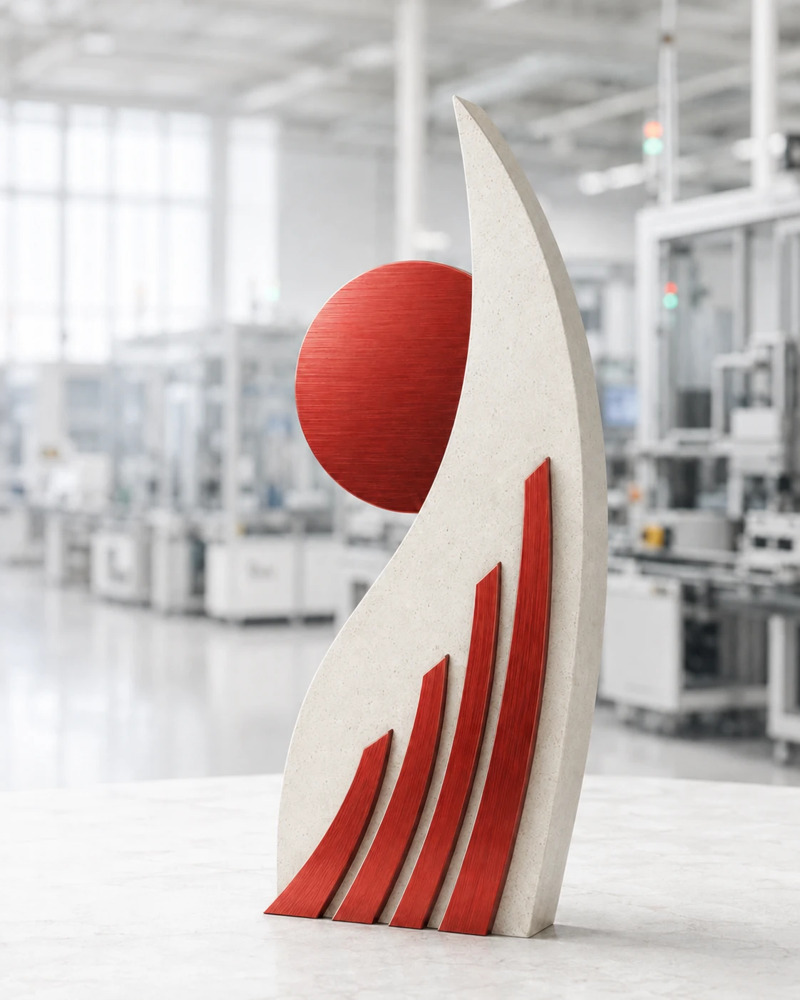

CHƯƠNG TRÌNH VINH DANH HẰNG THÁNG
Mỗi tháng,
những gương sáng
Mỗi tháng, 3–5 cá nhân hoặc đội nhóm được tôn vinh vì những đóng góp tích cực trong công việc, quản lý bộ phận, 3Q6S và giao tiếp.
Xem gương sáng tháng này
CHƯƠNG TRÌNH GHI NHẬN NỘI BỘ
Cùng nhau tiến bộ
01 — GƯƠNG SÁNG
Gương sáng tháng 07/2026
Chọn từng thành viên để xem ảnh bảng ghi nhận của cá nhân hoặc đội nhóm trong tháng.
02 — TIÊU CHÍ VINH DANH
Bốn nhóm tiêu chí,
mười sáu nội dung đánh giá.
Thành tích được ghi nhận dựa trên hành động cụ thể, bằng chứng rõ ràng và tác động tích cực đối với công việc hoặc đội ngũ.
03 — DẤU ẤN MỖI THÁNG
Mỗi tháng,
một câu chuyện đáng lan tỏa.
Chọn một tháng để xem số lượng và danh sách thành viên đã được vinh danh.